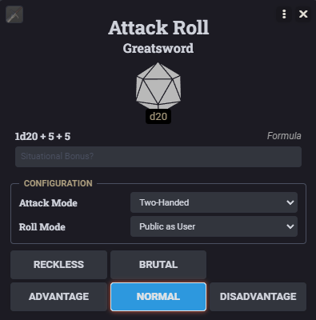
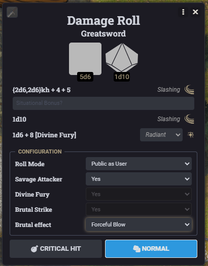

Barbarian
Barbarians live to attack. With so many features triggered by an attack or damage roll, going back to add dice or adjust results can get confusing. Now those choices are built right into your Attack and Damage rolls—choose your strike, add your damage, and keep the fight moving.
- Reckless Attack On your first attack, use Reckless above Advantage to apply the native effect and roll. Strength attacks gain advantage until your next turn; attacks against you also gain advantage. Disadvantage combines normally.
- Frenzy While Rage and Reckless are active, the first qualifying Strength-based weapon hit on your turn includes the configured damage rider, with critical support.
- Zealot · Divine Fury While raging, your first weapon or Unarmed Strike hit on your turn adds 1d6 plus half your Barbarian level. Choose Radiant or Necrotic in damage Configuration; the dice roll with the initial damage and support critical hits.
- Zealot · Fanatical Focus A failed-save card offers one replacement d20 plus your Rage Damage bonus, once per active Rage. Previous advantage/disadvantage is not reused; the new result is mandatory. Recorded targeting is restored after the reroll.
- Zealot · Zealous Presence Recipients gain advantage on attacks and saves until the start of the source Barbarian’s next turn. Attacking does not consume it; other sources and AC5E combine normally.
- Brutal Strike Use Brutal above Normal for a Strength attack on your turn without disadvantage. It activates Reckless on your first attack or reuses active Reckless later, forgoes advantage, and uses your one chosen Brutal attack for the turn even on a miss.
- Brutal effects in damage Configuration Hits include scaled Brutal damage with the weapon roll. Choose Forceful or Hamstring Blow; Improved Brutal Strike adds Staggering and Sundering, and Improved Brutal Strike (2) allows two different effects. Native Hamstrung, Staggered, and Sundered effects apply to hit targets, expire at your next turn start, and support Apply/Undo. Movement stays manual.
- Sundered The next single-target attack by someone other than the source Barbarian gains +5, once, then consumes eligible Sundered effects whether it hits or misses. Canceling the prompt preserves the effect.
- Staggered The next saving throw has disadvantage through AC5E or the standalone flow. Magic Resistance advantage cancels it to Normal. After that save, the native effect stays until expiry for its Opportunity Attack restriction.

